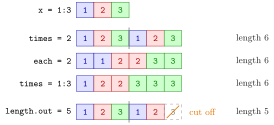

Repeating Values with rep()¶
Definition¶
The function rep(x, ...) builds a vector by repeating the elements of a vector x:
rep(x, times = k)repeats the whole vectorxtimes, one copy after the other;rep(x, each = k)repeats every element times before moving to the next element;rep(x, times = t)with a vectortof the same length asxrepeats element exactlyt[i]times;rep(x, length.out = n)repeatsxas often as needed and cuts the last copy so that the result has exactly elements.
each and times can be combined: each element is first repeated each times, and the resulting vector is then repeated times times.
Interpretation¶
rep() writes down patterns. Where seq() makes values that change by a fixed step, rep() makes values that come back: a column of zeros, a group label repeated for every observation in the group, or the pattern 1, 1, 2, 2, 3, 3.

The figure compares the four ways of repeating 1:3. With times = 2 the whole block 1, 2, 3 appears twice; with each = 2 every value is doubled in place. A vector times = 1:3 gives each value its own count, and length.out = 5 keeps repeating the block but cuts the second copy after two values.
The length of the result is easy to check: times the length of x for times = k or each = k, the sum of t for a vector times = t, and for length.out = n. Patterns from rep() are often poured into a matrix: matrix(rep(1:4, each = 4), nrow = 4, byrow = TRUE) gives a matrix whose row consists of the value . The same automatic repetition happens inside arithmetic when vectors have different lengths, which is vector recycling; rep() makes that repetition explicit and visible.
The common mistake is mixing up times and each, which give the same values in a different order. Since order is what pairs observations in R, rep(c("A", "B"), times = 3) and rep(c("A", "B"), each = 3) label six observations in completely different ways. Print the result before using it.
Key Results¶
rep(x, times = k)has lengthk * length(x); the copies ofxfollow each other.rep(x, each = k)has the same length but keeps equal values together.- With a vector
times = tof the same length asx, element is repeatedt[i]times; a single number repeats the whole vector. length.outoverridestimesand truncates the last repetition if needed.rep(x, each = a, times = b)first applieseach, then repeats the resultbtimes.
Examples¶
1. times versus each. The same values, two orders.
rep(0, 5)
#> [1] 0 0 0 0 0
rep(1:3, times = 2)
#> [1] 1 2 3 1 2 3
rep(1:3, each = 2)
#> [1] 1 1 2 2 3 3
2. A count per element, and a fixed length. times can be a vector, and length.out cuts the result.
rep(1:3, times = 1:3)
#> [1] 1 2 2 3 3 3
rep(1:3, length.out = 5)
#> [1] 1 2 3 1 2
rep(1:3, times = 1:2)
#> Error in rep(1:3, times = 1:2) : invalid 'times' argument
In the second line the second copy of 1:3 is cut after two values. In the last line times has two counts for three elements, which R refuses.
3. Combining each and times. The pattern 1, 1, 2, 2, 3, 3, 1, 1, 2, 2, 3, 3 in one call.
rep(1:3, each = 2, times = 2)
#> [1] 1 1 2 2 3 3 1 1 2 2 3 3
rep(rep(1:3, each = 2), times = 2)
#> [1] 1 1 2 2 3 3 1 1 2 2 3 3
Both lines give the same vector; the first does in one call what the second does in two steps.
4. Building a matrix from a pattern. A matrix whose row contains only the value , in two ways.
matrix(rep(1:4, each = 4), nrow = 4, byrow = TRUE)
#> [,1] [,2] [,3] [,4]
#> [1,] 1 1 1 1
#> [2,] 2 2 2 2
#> [3,] 3 3 3 3
#> [4,] 4 4 4 4
matrix(rep(1:4, times = 4), nrow = 4)
#> [,1] [,2] [,3] [,4]
#> [1,] 1 1 1 1
#> [2,] 2 2 2 2
#> [3,] 3 3 3 3
#> [4,] 4 4 4 4
matrix() fills column by column unless byrow = TRUE. The first call writes the blocks 1, 1, 1, 1 and 2, 2, 2, 2 and so on into rows; the second writes the block 1, 2, 3, 4 into each column. Filling rep(1:4, each = 4) column by column instead would give a matrix whose column is constant, the transpose of the one wanted.
Prerequisites¶
Related Concepts¶
Sources¶
- Programming for EOR · Week 2
- Lecture 2 script, Part 1 (Conditional Operations and Sequences), section Replicating values with rep(); Exercises 6 and 9 of Part 1
Aliases: rep, rep(), replicate values, repeat a vector, times and each Keywords: rep(x, times), rep(x, each), times as a vector, length.out truncation
Last updated: 10 November 2026 16:43
Repeating Values with rep()Random Sampling with sample()Atomic VectorSequences with : and seq()Matrices in RVector RecyclingFunction Arguments and DefaultsFactor